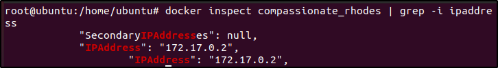

Possiamo provare le applicazioni da Docker Hub, usando Docker,
al posto di installarle sulla nostra macchina!
Per farlo, basta seguire la doc e mappare le porte:
-p porta_node:porta_container
Per trovare l'IP Interno del Container:
